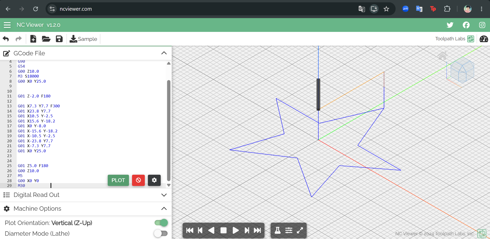

Reporte de Prácticas: Maquinado Controlado por Computadora (CNC)
Institución: Universidad Iberoamericana Puebla (Ibero Puebla)
Asignatura: Proyectos de Ingeniería
Profesor: Mtro. Oliver
Ubicación: Fab Lab Puebla
Fecha: 2 de octubre de 2026
Tema: Computer Controlled Machining (Maquinado CNC)
1. Introducción y Protocolo de Seguridad (Lab's Safety Training)
El uso de máquinas CNC (Computer Numerical Control) involucra riesgos significativos debido al uso de herramientas de corte giratorias a altas velocidades, bordes afilados, componentes de alto voltaje y piezas pesadas.
1.1 Equipo de Protección Personal (EPP) y Vestimenta
- Gafas de seguridad resistentes a impactos: Protección contra virutas y residuos proyectados durante el corte.
- Protección auditiva: Los niveles de ruido pueden alcanzar o superar los \(70\text{ dBA}\) cerca de la máquina.
- Bata / Overol 100% algodón: Evita quemaduras o enganches.
- Calzado de seguridad: Botas con casquillo de protección contra la caída de piezas u objetos pesados.
- Máscara de respiración: Filtra polvo fino generado según el material procesado.
- Sin accesorios colgantes: Prohibido el uso de joyería, bufandas, prendas sueltas o cabello desatado.
- Prohibición estricta: NO usar pantalones cortos (shorts) ni guantes durante la operación de la máquina (evita riesgos de atrapamiento).
1.2 Reglas de Operación y Entorno
- Atención continua: El operador debe permanecer atento y cerca de la máquina mientras esta se encuentre en funcionamiento.
- Personal capacitado: La máquina debe ser operada exclusivamente por personal autorizado y entrenado.
- Área de corte: Queda estrictamente prohibido introducir las manos o cualquier objeto cerca de la herramienta de corte mientras gira.
- Protección del gabinete: La puerta del gabinete eléctrico/mando debe permanecer cerrada mientras esté encendida.
- Limpieza del entorno: El piso debe estar limpio y libre de residuos para evitar resbalones o caídas.
- Distancia de seguridad: Mantener distancia debido a los desplazamientos rápidos e intempestivos de la máquina en los ejes \(X\), \(Y\), \(Z\).
- Parada de emergencia: Toda máquina automatizada puede iniciar movimiento repentinamente a menos que el botón de paro de emergencia (E-stop) esté activado.
- Riesgo eléctrico: Presencia de componentes de alto voltaje en los armarios de control y motores.
- Inspección de herramientas y sujeción: Asegurar que la herramienta esté bien ajustada y centrada, así como verificar que el material esté bien fijado sin obstáculos (clavos, prensas o nudos duros) en la trayectoria.
1.3 Extracción de Polvo y Gestión de Carga Estática
- Sistema de extracción (Vacuum Extractor): Se utiliza para la recolección de polvo y viruta durante y al finalizar el proceso.
- Instrucciones de operación:
- Se activa/desactiva mediante un interruptor dedicado.
- ¡Atención! No presionar el botón verde redondo contiguo, ya que desactiva el eje \(X\) para habilitar el módulo rotatorio (rotary add-on).
- Carga estática: Durante el aspirado se genera una alta cantidad de electricidad estática. Evite tocar cualquier superficie aterrizada (grounded) sin la debida precaución.
2. Especificaciones de los Routers CNC (Fab Lab Puebla)
En Fab Lab Puebla disponemos de dos Routers CNC de gran formato:
| Atributo | Máquina 1 (Asia Robótica) | Máquina 2 (Genérica / Universidad) |
|---|---|---|
| Modelo | Asia Robótica Shop-1325 | Generic Made by University |
| Dimensiones | \(3.0 \times 1.8 \times 1.7\text{ m}\) | \(3.0 \times 1.8 \times 1.7\text{ m}\) |
| Potencia del Motor | \(4\text{ HP} \ @ \ 24,000\text{ RPM}\) | \(4\text{ HP} \ @ \ 24,000\text{ RPM}\) |
| Suministro Eléctrico | \(220\text{V} / 2\text{F} / 3.5\text{ kW}\) | \(220\text{V} / 2\text{F} / 3.5\text{ kW}\) |
| Fijación de Material | Clamps (Prensas/Bridas) | Nails (Clavos/Tornillos) |
| URL de referencia | Asia Robótica Shop Pro | N/A |
3. Catálogo de Materiales y Recomendaciones de Maquinado
| Material | Descripción | Recomendaciones de Maquinado |
|---|---|---|
| ABS | Plástico duradero y resistente usado industrialmente. | Usar herramientas afiladas de 1 filo (single-flute) para acabado suave. |
| Acrílico | Plástico transparente de alta claridad y resistencia a la intemperie. | Usar herramientas de carburo y refrigeración/aire para evitar fusión o grietas. |
| Alucobond / Dibond® | Panel compuesto por dos láminas de aluminio y núcleo no metálico. | Usar herramientas afiladas con alta velocidad de corte para bordes limpios. |
| Aluminio | Metal ligero y resistente a la corrosión. | Cortadores afilados de múltiples filos (multi-flute) y refrigerante. |
| Cobre | Metal altamente conductor. | Cortadores afilados de 1 o 2 filos para cortes limpios. |
| Estireno (Styrene) | Plástico frágil y transparente usado en maquetación. | Asegurar buena sujeción y usar herramientas afiladas para evitar astillamiento. |
| Estaño | Metal blando y maleable. | Usar velocidades de avance reducidas (low feed rate). |
| Madera Sólida | Madera natural para uso estructural o estético. | Cortadores espirales de 2 filos (two-flute spiral) para extracción de viruta. |
| Maderas Blandas | Pino, cedro, etc. | Fresa espiral ascendente (upcut) para remover viruta y evitar desgarres. |
| Maderas Duras | Roble, arce, etc. | Fresa espiral descendente (downcut) para un acabado superficial más suave. |
| Triplay (Plywood) | Madera laminada por capas contraplacadas. | Fresa de compresión (compression bits) para evitar delaminación. |
| MDF | Tablero de fibra de densidad media. | Herramientas de HSS o carburo para tolerar el polvo abrasivo. |
| MDF Enchapado | MDF cubierto con chapa de madera real. | Fresa descendente (downcut) para no rasgar la chapa exterior. |
| MDF Laminado | MDF con recubrimiento plástico/melamínico. | Brocas con punta de carburo para cortes limpios en la capa plástica. |
| Melamina s/ Aglomerado | Aglomerado recubierto de capa melamínica. | Hoja o broca TCG (Triple-Chip Grind) para evitar despostillado. |
| Nylon | Polímero sintético flexible y resistente. | Brocas de 1 o 2 filos a alta velocidad para evitar que se derrita. |
| OSB | Tablero de virutas orientadas. | Herramientas con punta de carburo por la alta abrasividad del pegamento. |
| Metales No Ferrosos | Latón, bronce, aluminio. | Lubricación obligatoria y geometría de corte especial para no ferrosos. |
| Policarbonato Sólido | Plástico transparente de muy alta resistencia a impactos. | Herramientas afiladas y enfriamiento activo. |
| Polietileno | Plástico flexible de alta durabilidad. | Brocas afiladas de 1 filo (single-flute). |
| PVC (Sólido/Espumado) | Plástico de construcción versátil. | Pocos filos (low flute count) y control de temperatura. |
| Baquelita | Plástico termoestable de alta resistencia térmica. | Herramientas de carburo a velocidades moderadas. |
| Resinas | Compuestos sintéticos o naturales. | Herramientas afiladas a alta velocidad. |
4. Pruebas de Calibración y Caracterización de Parámetros
4.1 Prueba de Descentramiento (Runout Test)
Para determinar la excentricidad o descentramiento del Husillo (Spindle), se utilizó un reloj comparador Starrett: 1. Se midió la concentricidad en estado de reposo (husillo apagado). 2. Se midió nuevamente con el husillo encendido a velocidad nominal. 3. Resultado: El instrumento con resolución de \(0.01\text{ mm}\) no presentó variación apreciable, confirmando la alineación y calidad del sistema.
4.2 Tabla de Avances y Velocidades (Feeds and Speeds - ShopBot)
Para calcular la velocidad de avance (\(\text{Feed Rate}\)) y la carga de viruta por diente (\(\text{Chip Load}\)), se utilizan las siguientes fórmulas fundamentales de maquinado CNC:
Caracterización de Herramientas:
| Nombre / Herramienta | Serie Onsrud | Prof. Corte Max | Chip Load (in/diente) | Filos | Feed Rate (ips) | Feed Rate (ipm) | RPM |
|---|---|---|---|---|---|---|---|
| 1" 60° Carbide V Cutter | 48-37 | \(1 \times D\) | \(0.004 - 0.006\) | 2 | \(2.4 - 3.6\) | \(90 - 126\) | 18,000 |
| 1/4" Straight V End Mill | 48-005 | \(1 \times D\) | \(0.005 - 0.007\) | 1 | \(1.5 - 2.1\) | \(90 - 126\) | 18,000 |
| 1/2" Straight V End Mill | 48-072 | \(1 \times D\) | \(0.005 - 0.007\) | 2 | \(3.0 - 4.2\) | \(180 - 252\) | 18,000 |
| 1/4" Upcut Carbide End Mill | 52-910 | \(1 \times D\) | \(0.005 - 0.008\) | 2 | \(3.6 - 4.8\) | \(180 - 252\) | 18,000 |
| 1/4" Downcut Carbide End Mill | 57-910 | \(1 \times D\) | \(0.005 - 0.008\) | 2 | \(3.6 - 4.8\) | \(180 - 252\) | 18,000 |
| 1/4" Upcut Carbide End Mill | 65-025 | \(1 \times D\) | \(0.004 - 0.006\) | 1 | \(1.2 - 1.8\) | \(72 - 108\) | 18,000 |
| 1/8" Tapered Ball End Mill | 77-102 | \(1 \times D\) | \(0.003 - 0.005\) | 2 | \(1.8 - 3.0\) | \(108 - 180\) | 18,000 |
| 1-1/4" Surfacing Cutter | 91-000 | \(1/2 - 3/4 \times D\) | Variable | 2 | Variable | \(200 - 600\) | \(12,000 - 16,000\) |
5. Reglas de Diseño y Estrategias de Corte
5.1 Ensamble y Modificaciones Geométricas (Dogbones y T-bones)
Dado que las fresas cilíndricas dejan un radio interno proporcional al diámetro de la herramienta al realizar cajeados o cortes interiores, no es posible lograr esquinas interiores de \(90^\circ\) de forma directa. Para permitir ensambles tipo Finger Joint: * Dogbones / T-bones: Son alivios o sobre-cortes circulares añadidos en los vértices interiores de las muescas para asegurar el encaje preciso de las piezas ensambladas.
5.2 Tipos de Operaciones en Software CAM
- Pocketing (Cajeado): Desbaste total del material dentro de una geometría cerrada hasta una profundidad determinada.
- Profile / Cutting (Contorneado/Corte): Trayectoria a lo largo de un vector. Puede configurarse como:
- Inside (Por dentro): La herramienta compensa su radio hacia el interior.
- Outside (Por fuera): La herramienta compensa su radio hacia el exterior.
- On Line (Sobre la línea): El centro de la herramienta sigue exactamente el vector.
- Tabs (Puentes de sujeción): Pequeñas pestañas de material no cortado que mantienen fija la pieza a la lámina principal durante la última pasada, evitando que salga proyectada.
5.3 Sistemas de Fijación (Fixtures)
- Clamps (Bridas/Prensas): Se deslizan a lo largo de los rieles o canales de la cama de la máquina.
- Mesa con Insertos Roscados: Permite una alineación precisa y repetible para trabajos de doble cara (maquinado por ambos lados manteniendo el mismo origen \(X, Y, Z\)).
6. Programación y Control en G-Code
6.1 Sintaxis y Diccionario de Comandos G-Code
El código \(G\) es el lenguaje estandarizado utilizado para indicarle a la máquina CNC las trayectorias, velocidades y funciones auxiliares.
| Comando / Variable | Descripción / Función | Clasificación |
|---|---|---|
G0 / G00 |
Movimiento rápido de posicionamiento (sin realizar corte). | Movimiento |
G1 / G01 |
Movimiento lineal controlado con avance definido por F. |
Interpolación |
G2 / G02 |
Interpolación circular en sentido horario (CW - Clockwise). | Interpolación |
G3 / G03 |
Interpolación circular en sentido antihorario (CCW - Counter-Clockwise). | Interpolación |
G17 |
Selecciona el plano de trabajo \(XY\). | Selección de Plano |
G20 |
Define el sistema de unidades en pulgadas. | Unidades |
G21 |
Define el sistema de unidades en milímetros. | Unidades |
G90 |
Programación en Coordenadas Absolutas (referenciadas al origen fijado). | Modo Coordenadas |
G91 |
Programación en Coordenadas Incrementales (referenciadas a la posición actual). | Modo Coordenadas |
G53 |
Cero Máquina (Machine Coordinate System - MCS). | Origen / Referencia |
G54 |
Cero Pieza / Sistema de Coordenadas de Trabajo (Workpiece Coordinate System - WCS). | Origen / Referencia |
X, Y, Z |
Coordenadas de posición de los ejes del espacio tridimensional. | Posición |
F |
Velocidad de avance (Feed Rate), ej. F180 o F300. |
Parámetro de Corte |
S |
Velocidad del husillo (Spindle Speed en RPM), ej. S18000. |
Parámetro de Corte |
M3 / M03 |
Encender el husillo en sentido horario. | Función M (Auxiliar) |
M4 / M04 |
Encender el husillo en sentido antihorario. | Función M (Auxiliar) |
M5 / M05 |
Apagar el husillo. | Función M (Auxiliar) |
M30 |
Fin del programa y reinicio al inicio del archivo. | Función M (Auxiliar) |
6.2 Interpretación Práctica de Código G (Trayectoria con Arco)
A continuación se muestra la estructura detallada del programa simulado para realizar un contorno con perfil lineal y curva con arco horario:
M3 S1000 ; Encender el husillo en sentido horario a 1,000 RPM (o S18000 según material)
G0 X0 Y0 ; Movimiento rápido al punto inicial (0,0)
G1 Z-2 F180 ; Bajar la herramienta a una profundidad de -2.0 mm con avance F180
; Trayectoria de corte perimetral
G1 X40 Y0 F300 ; Línea recta lineal hasta X=40, Y=0 con avance F300
G1 X40 Y30 ; Línea recta lineal hasta Y=30
G1 X10 Y30 ; Línea recta lineal hasta X=10
G2 X0 Y20 I0 J-10 ; Arco en sentido horario hacia (0,20) con centro relativo en I=0, J=-10
G1 X0 Y0 ; Línea recta de regreso al punto inicial (0,0)
; Finalización de ciclo
G0 Z10 ; Retirar herramienta a distancia de seguridad (Z=10 mm)
M5 ; Apagar el husillo
G0 X0 Y0 ; Regresar ejes X e Y al origen
M30 ; Fin del programa y reinicio
6.3 Simulación en Plataforma Digital (NC Viewer)
Para la verificación de trayectorias complejas en 3D antes del maquinado real, utilizamos la herramienta web NC Viewer (ncviewer.com).
Ejemplo: Trazo de Estrella de 5 Puntas

7. Conclusión
La práctica impartida en Fab Lab Puebla por el Mtro. Oliver permitió comprender de manera integral el proceso de maquinado CNC: 1. Seguridad operacional: Normativa estricta sobre EPP y prevención de riesgos mecánicos y mecánicos-eléctricos. 2. Parámetros de corte: Selección informada de velocidades de avance (\(Feed\ Rate\)) y rotación (\(Spindle\ Speed\)) ajustadas a las propiedades del material. 3. Estrategia CAD/CAM: Implementación de t-bones/dogbones y puentes de sujeción (tabs). 4. Programación G-Code: Comprensión e interpretación de comandos G y M para movimientos lineales, arcos y simulación previa mediante herramientas virtuales como NC Viewer.